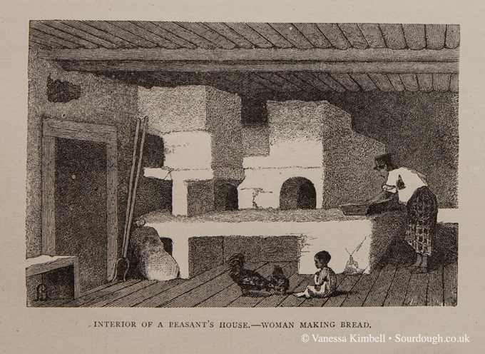
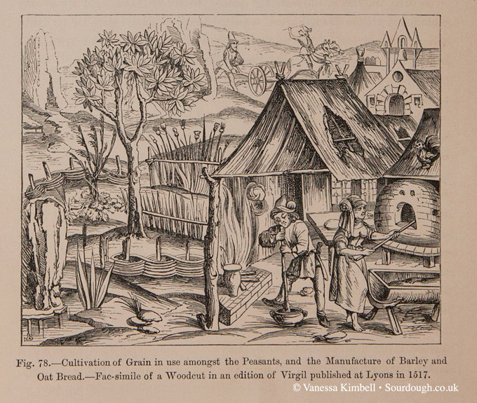
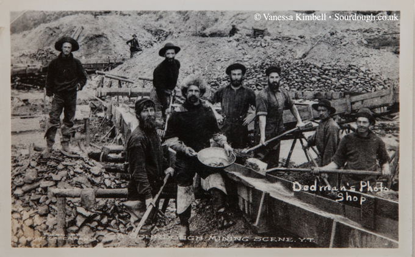

“If you really want to make a friend, go round someone's house with a freshly baked loaf of sourdough bread!” ― Chris Geiger
The history of sourdough
Bread is older than metal; even before the bronze age, our ancestors were eating and baking flat breads. There is evidence of neolithic grinding stones used to process grains, probably to make a flat bread; but the oldest bread yet found is a loaf discovered in Switzerland, dating from 3500 BCE. The use of leavening was discovered and recorded by the the Egyptians; there is some discussion about how this process happened, and the degree to which there was an overlap between brewing and bread-making, but obviously without a handy time machine it’s going to remain one a debating point among historians of ancient food. What is not in doubt is that the ancient Egyptians knew both the brewing of beer and the process of baking leavened bread with use of sourdough, as proved by wall paintings and analyses of desiccated bread loves and beer remains (Rothe et al., 1973; Samuel, 1996).
Wild yeast is used in cultures all over the world in food preparations that are so seeped in culture and history that they have been made long before any form of written words. The Sudanese, for example make kisra (fermented dough made with sorghum), The Ethiopians use wild yeast to make injera (teff), Mexicans make pool a fermented corn drink, Ghanaian kenkey and Nigerian use fermentation for their maize to make ogi, Indian idli breakfast cakes, made with rice, beans or chickpeas, and the Turkish make bona `( a ferment drink) generally with wheat, maize, sorghum, or millet and Nigerians ferment the cassava to make gari or fufu with.
Until the time of the development of commercial yeasts, all leavened bread was made using naturally occurring yeasts – i.e. all bread was sourdough, with it’s slower raise. Indeed, one of the reasons given for the importance of unleavened bread in the Jewish faith is that at the time of the exodus from Egypt, there wasn’t time to let the dough rise overnight.

From Egypt, bread-making also spread north to ancient Greece, where it was a luxury product first produced in the home by women, but later in bakeries; the Greeks had over 70 different types of bread, including both savoury and sweetened loaves, using a number of varieties of grain. The Romans learned the art of bread from the Greeks, making improvements in kneading and baking. The centrality of bread to the Roman diet is shown by Jevenal’s despair that all the population wanted was bread and circuses (panem et circenses). We have sourdough recipes from seventeenth century France using a starter which is fed and risen three times before adding to the dough. The French were obviously far more interested in good tasting bread over an easy life for the baker.
The introduction of commercial yeasts in the nineteenth century was to the detriment of sourdough breads, with speed and consistency of production winning. By 1910, Governmental bills preventing night work and restricting hours worked made more labour intensive production less sustainable, and in response, the bakers moved again towards faster raising breads, such as the baguette. It’s only since the nineteen eighties that there has been demand again for sourdoughs in the UK, to the extent that in 1993, regulations were issued defining what could be sold as a sourdough bread. In Germany, again, the use of sourdough was universal until brewers yeasts became common in the fourteen and fifteen hundreds. The overlap between brewing and baking was reflected in monasteries producing both bread and beer, using the heat of the oven to dry malted gain and the yeast to raise the bread. However, the big difference was that in Germany, sourdoughs continued to be used for rye breads, even as bakers’ yeasts became more popular for all other types.

While yeast is still used with rye flours, the sourdough is used to increase acidity, which prevents starches from degrading. This use in Germany is also seen in other countries with a strong rye bread tradition; Scandinavian countries and the Baltic states. Like France, the Germans have regulatory protection of what can be sold as sourdough. The prospectors and explorers in the United States in the nineteenth century were referred to as sourdoughs as it was a practice to keep the mother leavening on your person, to make sure it didn’t freeze in the bitter winters. Personally I think that it was to get the yeast’s going, with the warmth so they would be more active and make better bread rather than as a freezing prevention measure. As a result, the bread in San Francisco was predominately sourdough, with bakeries such as the Boudin Bakery still baking today after having been founded in the mid nineteenth century.

Here in the UK, greater and earlier urbanisation, and the later invention of the Chorleywood process enabling the mass production of bread using softer English wheats moved baking away from small scale and artisanal production towards larger industrial methods. However, with the current triumph of television baking, and a re-invigoration of interest in the quality of the food we eat after the nadir of the post war period, interest in sourdoughs from smaller bakeries and home production is once again on the rise.